reseau radio SNT
Partie 1: Gestion de l’affichage
Une présentation générale de la carte microbit se trouve à la page suivante.
La fiche reponse pour les questions.
Prise en main de l’interface microbit sur Vittascience
Ce premier travail permet de découvrir l’interface Vittascience.com pour la programmation de la carte microbit. Les questions qui suivent cette manipulation vont présenter le langage Python. Aucune connaissance du langage n’est requise pour ce premier travail.
-
Aller à la page Editeur microbit sur Vittascience.com
-
Brancher la carte microbit sur l’un des ports USB de l’ordinateur. La carte est alors visible depuis l’explorateur comme une nouvelle mémoire flash.
Premier programme
La page présente 2 espaces. L’edition du programme se fait dans la partie gauche (celle présentant les blocs à assembler). A droite, c’est la traduction du programme en langage Python, qui est réalisée de manière automatique.
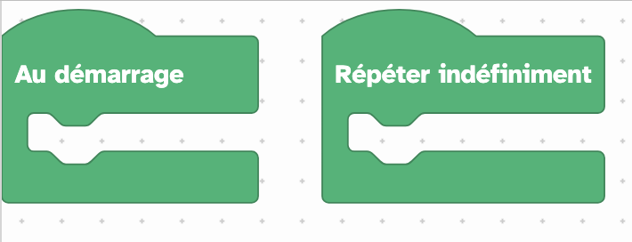
Le programme en langage Python est alors:
En colorant les différentes parties du script Python, on peut mettre en correspondance: les blocs et leur équivalent en langage informatique:
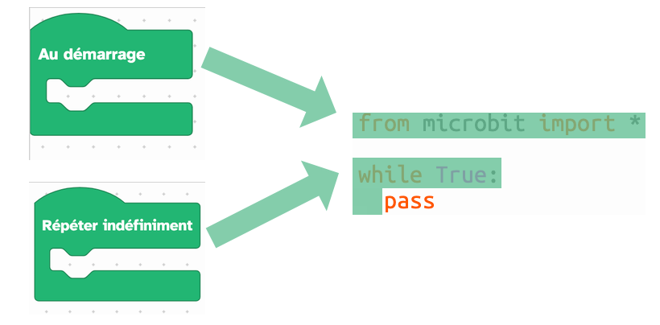
Mettre un bloc de type affichage sur la carte microbit, comme illustré ci-dessous:
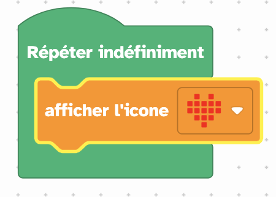
Modifier l’image pour avoir l’affichage d’un smiley. Il faut modifier le paramètre du bloc et choisir une image parmi les propositions:
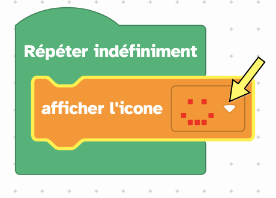
Vous pouvez alors téléverser le programme dans la carte microbit et observer l’affichage. Il y a 2 options proposées:
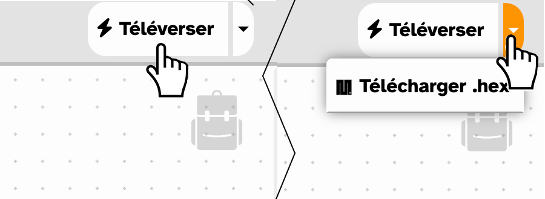
- Soit utiliser le bouton téléverser. Le programme se charge alors automatiquement dans la carte microbit
- soit le bouton de téléchargement. C’est l’ordinateur qui charge alors le programme généré (l’extension est
.hex). Il faudra le deplacer sur la carte microbit à l’aide de l’explorateur:
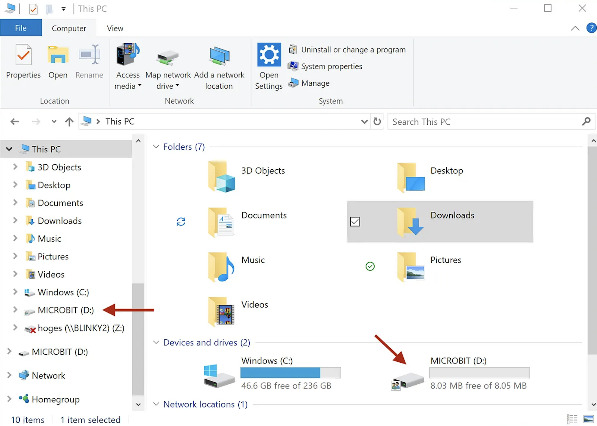
Ajouter une instruction conditionnelle (si le bouton A est préssé, alors…)
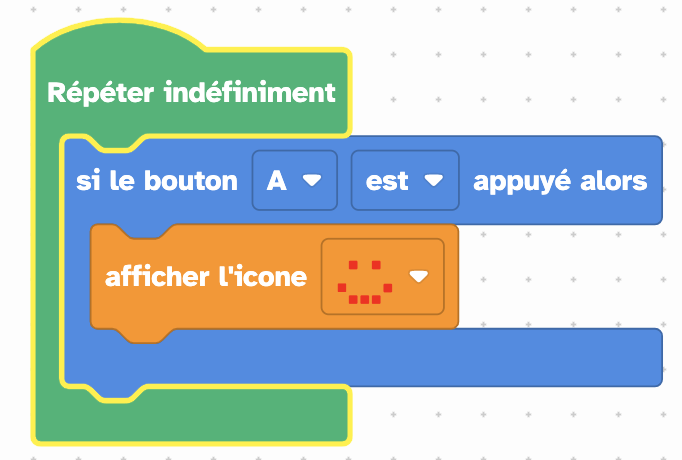
Observer le script Python.
Si on met à nouveau les blocs en correspondance avec les instructions du langage, cela donne:
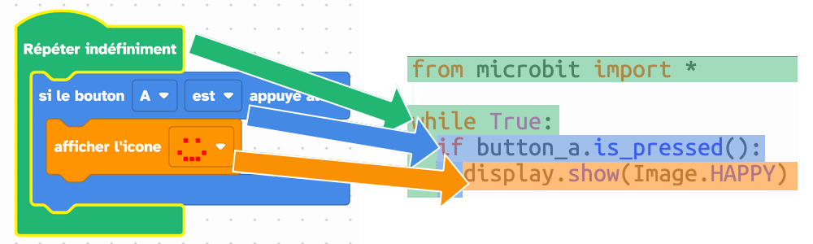
Qu1.: colorier le script sur la fiche de reponse.
Les instructions en python ne sont pas alignées sur la même verticale. On dit qu’elles sont indentées lorsqu’elles présentent un décalage horizontal. Cette disposition est aussi visible sur l’algorithme écrit en langage scratch (blocs colorés).
Qu2.: Expliquer la signification de cette indentation en Python
Terminer maintenant le programme selon l’image suivante:
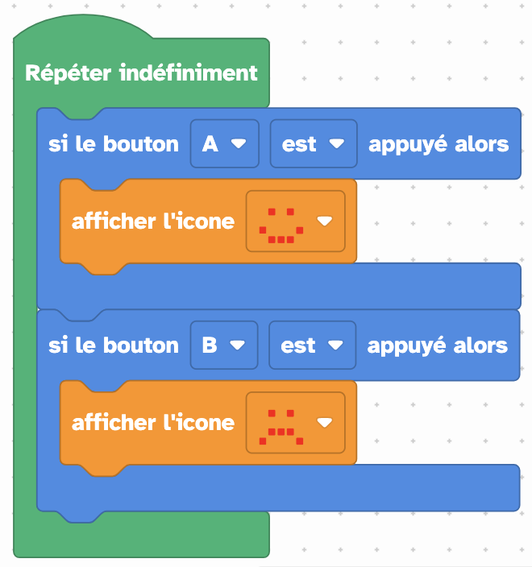
Et téléverser dans la carte microbit. Comment réagit-elle lorsque vous appuyez sur le bouton A, le bouton B?
Qu3.: Comment la réagit la carte lorsque l’on appuie sur les 2 boutons simultanément? Cela génère t-il un bug a l’affichage? Pourquoi?
Modifier la structure conditionnelle en remplaçant la séquence: si … si …
par la séquence: si … sinon si …
Qu4.: Cela améliore t-il le comportement de la carte lorsque l’on appuie simultanément sur les 2 boutons? Pourquoi?
Introduction au langage Python
Le langage python, comme tout langage informatique est un langage très structuré, qui utilise un petit nombre de mots clés, à partir desquels on construit des instructions.
Les couleurs (programme en blocs, fenêtre de gauche) indiquent la famille d’instructions. Les instructions du langage peuvent être rassemblées selon les principales familles qui sont:
- Affichage
- Entrées/ Sorties
- Logique
- Boucles
- Variables
D’autres familles d’instructions concernent la programmation de Fonctions, ou l’utilisation de types construits comme les chaines de caractères et les listes, les opérations Math, ou la gestion des erreurs (Exceptions).
Les fonctions Communication, Capteurs, Actionneurs, Robots, … concernent la manipulation d’objets technologiques et apportent des extensions du langage. Selon les besoins, il faudra parfois ajouter des extensions de cette sorte, comme ici avec la première ligne:
Avec la programmation par blocs sur l’interface Vittascience.com, cette ligne est ajoutée dès que vous choisissez une instruction du bloc Entrées/Sorties spécifique à la carte microbit.
Qu5.: compléter le tableau avec la description de l’instruction:
| mot clé | description |
|---|---|
import |
|
display.show() |
|
button_a.is_pressed() |
|
button_b.is_pressed() |
Les instructions qui terminent par des parenthèses () sont des fonctions. Les fonctions executent une série d’instructions, qui sont rassemblées dans un seul bloc appelé fonction. Cela permet de rendre le script plus court et plus lisible. Une fonction peut être réutilisée à plusieurs endroits du programme.
Parmi ces fonctions, certaines doivent être écrites en plaçant un argument entre les parenthèses. Cela permet de préciser leur comportement.
**Qu6.: Dans le tableau précédent, quelle est LA fonction qui nécessite un argument? A quoi sert-il?
Certaines instructions vont permettre des répétitions (famille des boucles), d’autres vont executer des branchements conditionnels (famille logique). Ce sont les mots clés while et if.
Qu7.: Retrouver les familles pour chacun de ces 2 mots clés,
ifetwhile. Préciser: lequel va servir pour une instruction conditionnelle, executée une seule fois? Lequel sert à répéter un bloc de code (écrire dans la colonne execution)?
| mot clé | famille | execution |
|---|---|---|
| if | ||
| while |
Qu8: compléter le tableau avec la description de chacune des instructions:
| instruction | description |
|---|---|
while True: |
|
if button_a.is_pressed(): |
Dessiner son propre logo
Le bloc suivant permet de personnaliser l’image affichée:
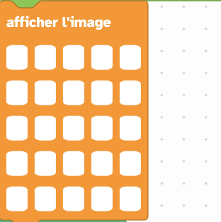
Lorsque l’on ajoute ce bloc au programme, cela insère les 2 lignes suivantes dans le script python:
L’image est alors générée par la ligne led_image = Image('00000:00000:00000:00000:00000'). L’instruction display.show(led_image) va afficher cette image sur la carte microbit.
Remplacer les 2 images du programme précédent (smiley happy/sad). Placer vos propres dessins, réalisés à partir de la matrice.
Pour dessiner l’image, il faut cliquer dans les cellules de la matrice(pixels). Le bloc suivant affiche un Y sur la carte microbit.
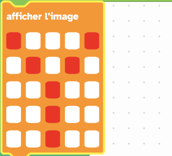
- Quel est le code correspondant pour le Y?
- Programmez la carte afin qu’elle montre l’animation suivante:
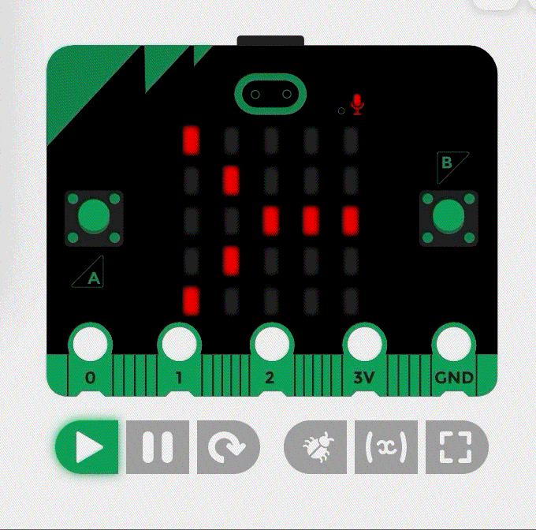
rotation droite
- Recopier le code python qui est généré -> Qu9.
Partie 2 : Projets utilisant le module radio
Envoyer un message par ondes radio La carte microbit possède une antenne radio, ce qui lui permet d’emettre et de recevoir des messages.

communication radio en reseau
Projet 1: Animation à plusieurs cartes microbit
Utiliser le module radio de la carte microbit pour afficher un dessin glissant sur plusieurs cartes.
Il faudra synchroniser l’animation, afin de provoquer cet effet de glissement de l’image. Par exemple, déclencher l’animation sur la carte 2 lorsque le dessin sort de la carte 1.
Projet 2: Communication confidentielle
Vous allez envoyer un message dans le reseau de cartes. L’une de ces cartes est une carte mystère. Celle-ci est programmée pour repondre lorsqu’elle reçoit le message “Hello”.
Vous cherchez à découvrir ce que la carte mystère va répondre. Aussi, vous allez programmer votre carte pour qu’elle emette le mot “Hello”, et qu’elle n’affiche que les mots différents de “Hello”: c’est à dire les messages qui proviennent de la carte mystère…
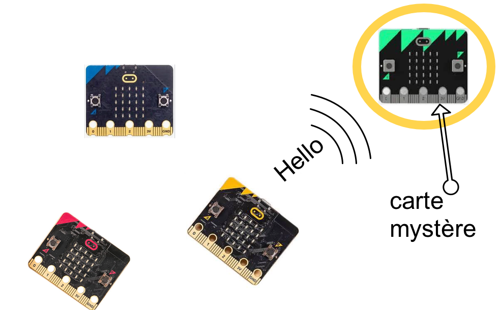
Voici le programme que vous devrez saisir:
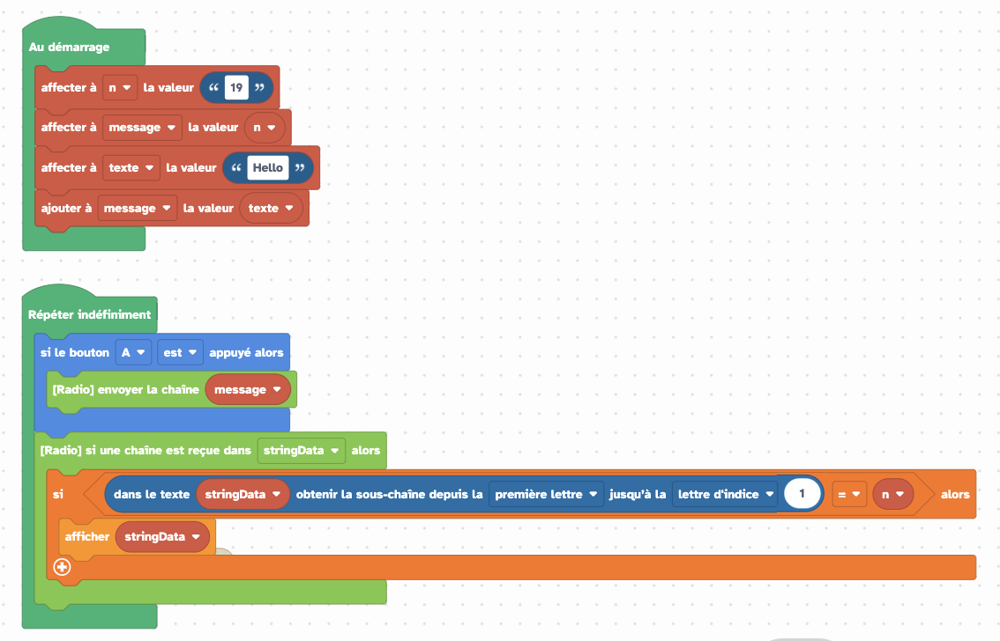
programme complet
Dans le menu Variables, créer une nouvelle variable que vous nommerez n.
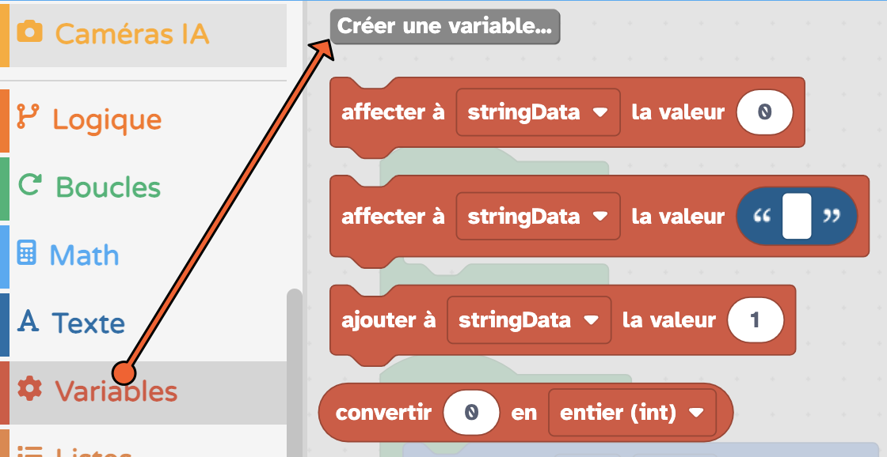
Créez 2 autres variables que vous nommerez texte et message.
Ajouter l’instruction Affecter à n la valeur " “.
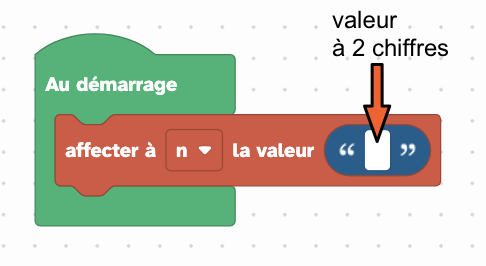
Saisir une valeur numerique à 2 chiffres dans ce bloc. Ce sera votre identifiant. Cette valeur doit être unique, personne ne devra avoir la même parmi les autres cartes du reseau. (L’exemple suivant sera traité avec la valeur 19).
Ne pas choisir 19: ce nombre doit être différent pour chacune des cartes élèves de la classe.
Ajouter l’instruction Affecter à texte la valeur " “.
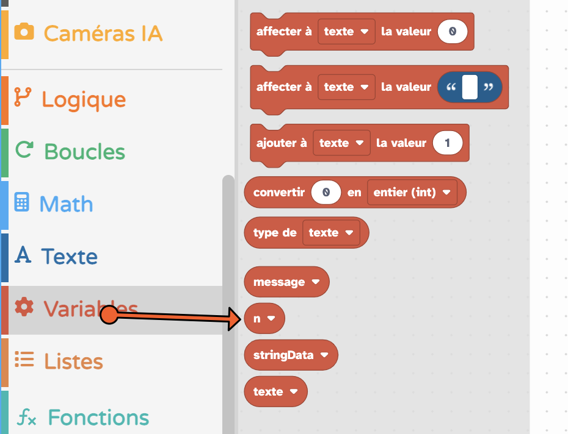
La variable n se trouve dans la liste des blocs du menu Variables
Ajouter la variable n dans ce bloc.
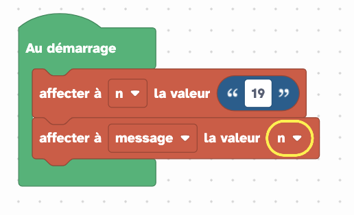
Ajouter alors les blocs suivants pour finir la partie Au demarrage:
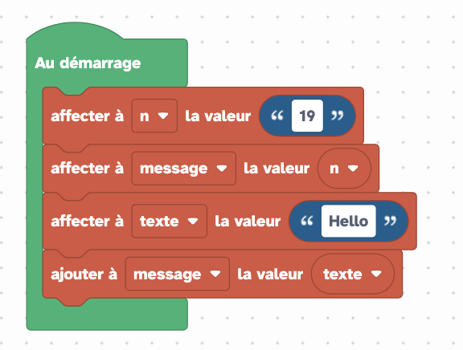
Ces instructions permettent de construire la variable message par collage des 2 chaines de caractère, n et texte.
Un langage informatique utilise des variables. Ce sont des caractères ou des mots, qui n’existent pas dans le langage, et que vous choisissez pour y stocker une valeur. En langage Python, le signe ‘=’ devant une variable indique que l’on stocke la valeur de droite dans la variable ecrite à gauche:
Cette instruction signifie que l’on stocke le mot ’lundi’ dans la variable
jour.
Question a: Quelles sont les variables utilisées dans ce programme?
Question b: Quelles chaines de caractères sont stockées dans les variables lors des 3 premieres instructions:
Question c: Quel est le contenu de la variable message apres la dernière instruction?
Poursuivre la programmation: Dans la partie Répéter indefiniment:
Ajouter les blocs qui permettront d’envoyer par radio la chaine message.
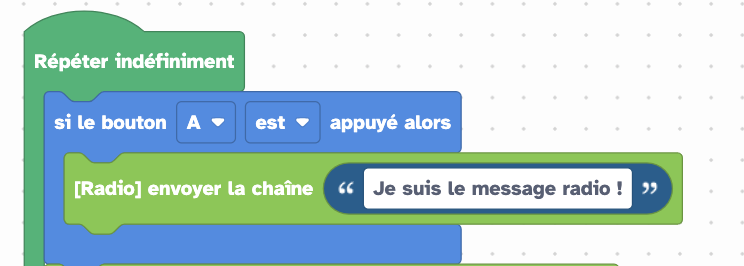
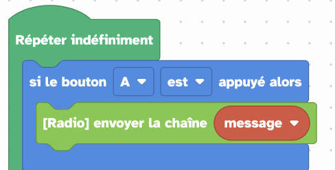
Remplacer le texte par la variable message
Ajouter les blocs qui vont traiter les messages radio reçus (s’il y en a):
-
Ajouter le bloc
[radio]si une chaine est reçu dans stringData alors: -
Puis, pour obtenir la condition si dans la chaine strigData obtenir la sous-chaine…, vous allez passer par les étapes suivantes:
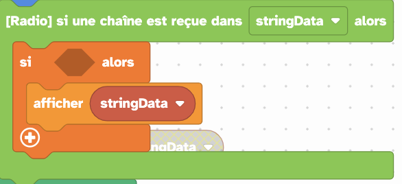
choisir la variable stringData
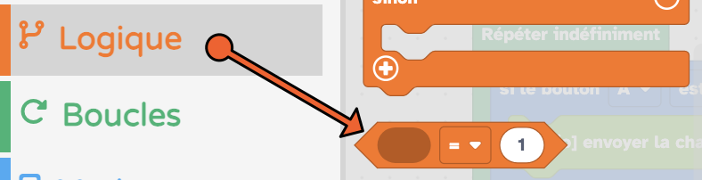
Placer ce bloc dans l’instruction conditionnelle:
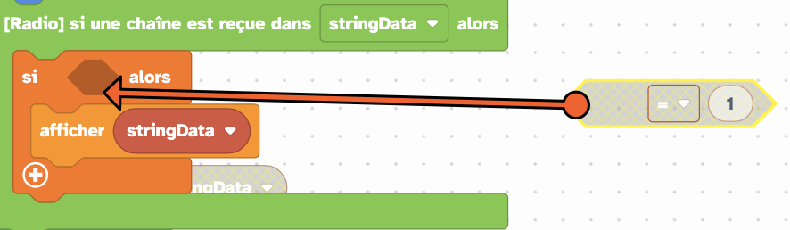
Rechercher l’instruction suivante dans le menu Textes:
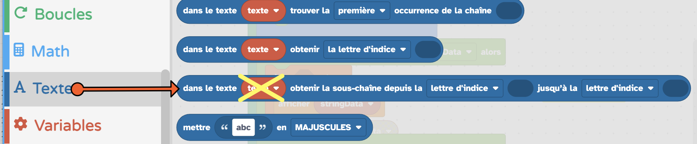
il faudra probablement remplacer la variable proposée
Choisir la variable stringData
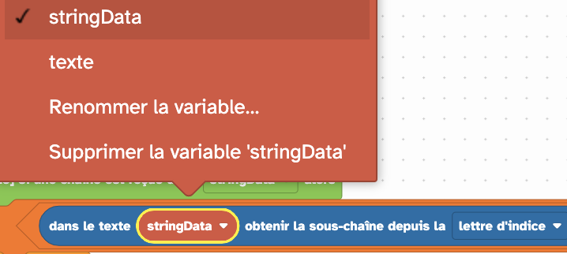
Choisir la sous-chaine depuis la premiere lettre:
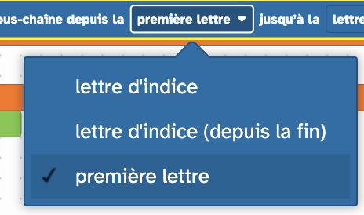
Dans le menu math, trouver le selecteur de valeur numerique:
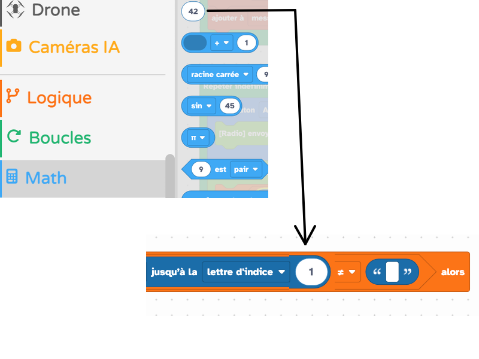
mettre la valeur 1
Modifier le signe (mettre =) et compléter l’instruction avec la variable n:
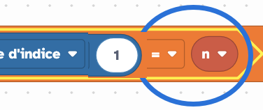
Téléverser et tester le programme.
Question d: Vous devriez recevoir un message personnalisé de la carte microbit mystère. BRAVO!! Recopiez ce message.
Question e: Le programme utilise des instructions apportées par la librairie radio, utiles pour la programmation de la carte microbit.
Quel est le rôle des fonctions suivantes: Recopier et compléter le tableau:
| instruction | description |
|---|---|
send |
|
receive |
Question f: Quel est le rôle de la variable stringData? (Que contient-elle?)
Compléments: Configuration radio
radio.config(channel=7): Configure la fréquence d’émission : la valeur est un numéro entre 0 et 83
radio.config(group=0): Configure le groupe : au sein d’une même adresse, 256 groupes numérotés de 0 à 255 peuvent cohabiter`
Programme de la carte MB mystere
notes pour l’enseignant
Programme de la carte eleve
Correction à venir
Programme de la carte enseignant
Liens
- Introduction au module radio (TP Lucioles): microbit-micropython.readthedocs.io
- TP message secret: microbit.org
- specifications du contrôleur radio lancaster-university`
- diagramme d’état et diagramme d’activitéwww.uv.es